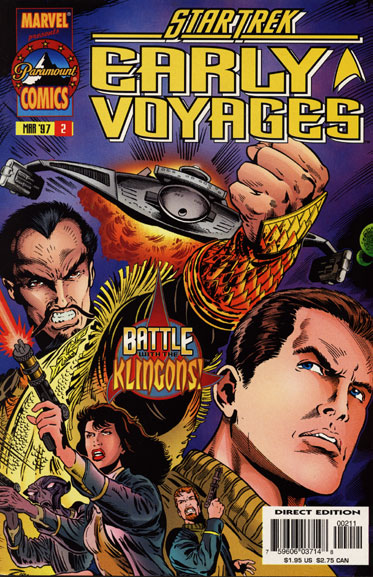
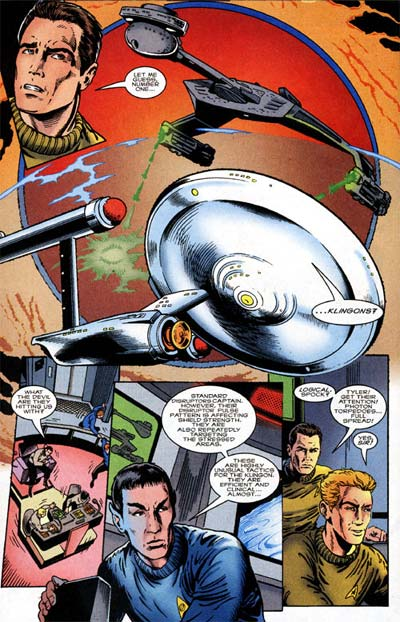

|


|
Gnese
| Episdios I Reflexes
| Palavras do autor | Palavras
do artista Star Trek
Early Voyages, n 02 maro de 1997  Histria: Dan Abnett e Ian Edginton Material produzido por Salvador Nogueira para o Trek Brasilis
Data Estelar: 2378.1 Sinopse: A Enterprise chega Nebulosa Marrat, onde deve render assistncia Base Estelar 13, mais conhecida como Forte Apache. A instalao, sob o comando do comodoro Hal Wyeth, foi estabelecida na regio para fazer o policiamento na rea, mas tem sofrido ataques cada vez mais frequentes e violentos depois que iniciou o Projeto Pharos --a montagem de um enorme farol para servir como ponto de referncia para as naves que esto navegando pela nebulosa (que inutiliza praticamente todos os sensores dos veculos) e patrulhar a regio. A situao se tornou crtica depois que vazou a informao de que os engenheiros da Federao haviam encontrado uma jazida gigantesca de diltio puro, no planeta em que Pharos estava sendo construdo. Ao que parece, tem muita gente que no est aceitando que a Frota Estelar fique com os recursos naturais, localizados em um planeta que, estritamente, no faz parte de seu territrio. Pike, no comando da Enterprise, consegue proteger a base do ltimo ataque, composto por naves rions, Arcturans, Khodini e de rebeldes humanos, e desce estao para prestar assistncia. L ele informado por Wyeth que a base perdeu contato com os engenheiros em Pharos. O capito volta Enterprise e ruma para o planeta, na tentativa de salvar os oficiais da Frota envolvidos no projeto. Chegando l, um grupo avanado comandado pela tenente Robbins sai procura dos engenheiros, mas se v s voltas com os Klingons. Em rbita, a mesma situao se apresenta Enterprise, sob ataque de um cruzador K7. Srias avarias ocorrem a bordo, e o comandante Kaaj, do cruzador de batalha Varchas, pede a rendio da Enterprise. Pike se recusa, e Kaaj d a ele dois minutos para reconsiderar e entregar Pharos. Enquanto isso, no planeta, a Nmero Um e seus oficiais esto sob fogo cruzado dos Klingons. Somente com uma inteligente manobra da oficial-comandante, usando os transportes para colocar seu grupo em posio estrategicamente favorvel, que eles conseguem dominar os Klingons e voltar nave. Pike, antevendo a impossibilidade de obter uma soluo diplomtica com a crise, decide que a nica forma de acabar com a disputa destruir sua motivao. Ele ordena que a Enterprise dispare contra Pharos, destruindo a instalao e provocando a combusto do diltio --o fenmeno de queima dos cristais vai durar algumas dcadas. Durante esse tempo, Pharos servir como um farol natural para as naves da regio. Com seu objetivo fracassado, Kaaj e os Klingons deixam a Nebulosa Marrat, mas prometem vingana pela humilhao trazida a eles por Pike e pela Enterprise.  Comentrios Se a primeira edio de "Early Voyages" foi boa, a segunda foi melhor ainda. Uma histria 100% criativa, a introduo dos Klingons srie e a criao convincente de um nmese para Pike fazem de "The Fires of Pharos" um episdio vencedor. O visual continua bastante apurado, com arte magnfica e uma boa mescla de elementos caractersticos dos anos 50 com a arte dos anos 90. A enfermeira Carlotti usando meia-cala rendada, por exemplo, totalmente coerente com o que veramos se a Srie Clssica seguisse com os personagens de "The Cage". O visual Klingon, baseado na aparncia clssica (sem testa de tartaruga), tambm serve incrivelmente para manter o tom de "pr-sequncia" dessa produo de quadrinhos. Mas no s o visual 100% Klingon clssico --suas atitudes tambm esto bem prximas do que esperaramos dos grandes viles da Srie Clssica. O background criado para a crise de Pharos muito bem pensado, assim como todo o enredo, que acaba por colocar os Klingons numa situao mpar: suas exigncias so totalmente justificveis. Da mesma maneira, a soluo que Pike adota para o dilema no s produz um incrvel clmax para o desfecho como no parece forada em nenhum modo --emana harmoniosamente da histria contada. Pike continua sendo o grande personagem da srie, cada vez melhor desenvolvido. V-se aqui uma tremenda semelhana entre o personagem retratado aqui e aquele visto em "The Cage". Olhando para o piloto original da Srie Clssica e depois para as primeiras edies de "Early Voyages", no difcil acreditar que essas histrias em quadrinhos realmente aconteceram durante a primeira misso de cinco anos do capito Christopher Pike. Uma grande demonstrao de continuidade dada pelo fato de a misso se desenrolar no sistema Marrat, para onde a Enterprise estava indo na edio anterior. Outra a promessa de Kaaj, dizendo que sua briga com Pike estava apenas comeando. No difcil adivinhar que o carismtico comandante Klingon estaria de volta em breve.
|